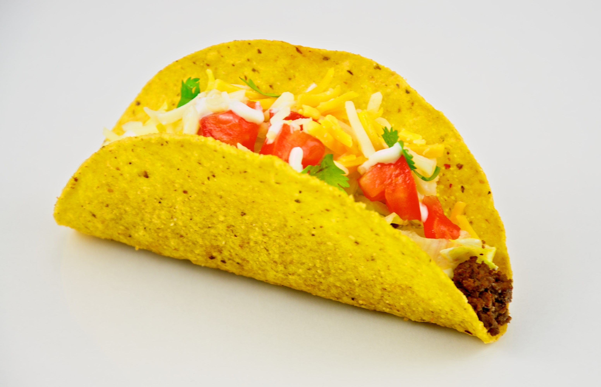

Taco

These ground beef tacos are a nod to one of America favorite Mexican fast food chains —Taco Bell. I’m not much of a fast food fan, but Taco Bell tacos hit just right when it comes to drive-thru Mexican food.
Ingredients
- Ground beef
- White onion
- Garlic
- Tomato juice
- Yellow cornmeal
- Taco shells
- Shredded cheese
- Taco seasoning
Steps
- Brown the beef
- Sauté the onion and garlic. Once the meat is in smaller bits, stir in the onions and garlic and cook.
- Add the special seasonings.
- Toast your tacos. Use a sheet pan or a casserole dish to snuggle your corn tortillas together upright, then spoon the taco meat into them and sprinkle them with shredded cheese.
- Add the fixings. Now it’s time to dress these babies up.
Home